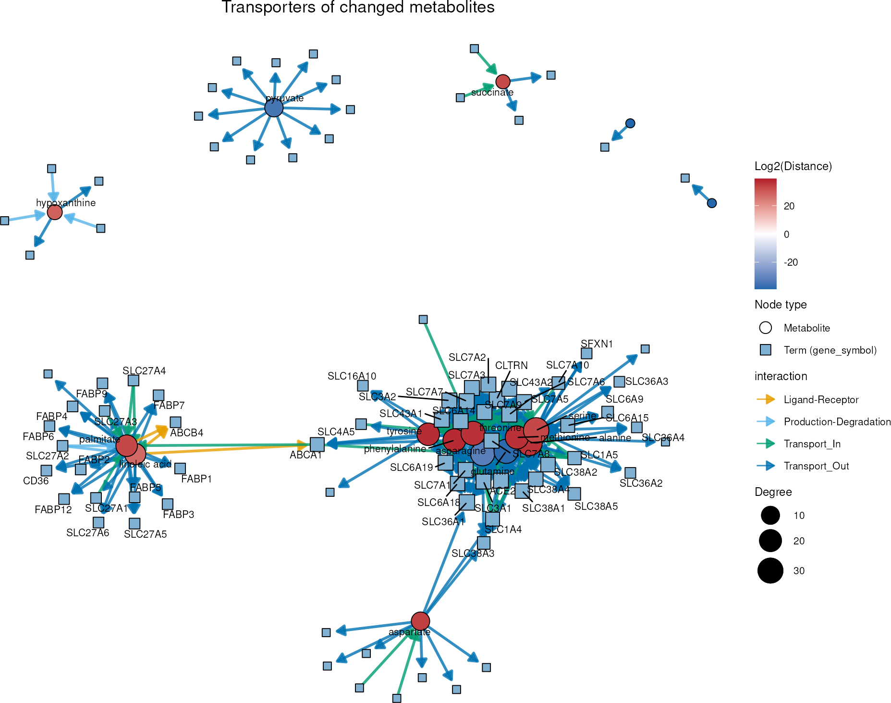
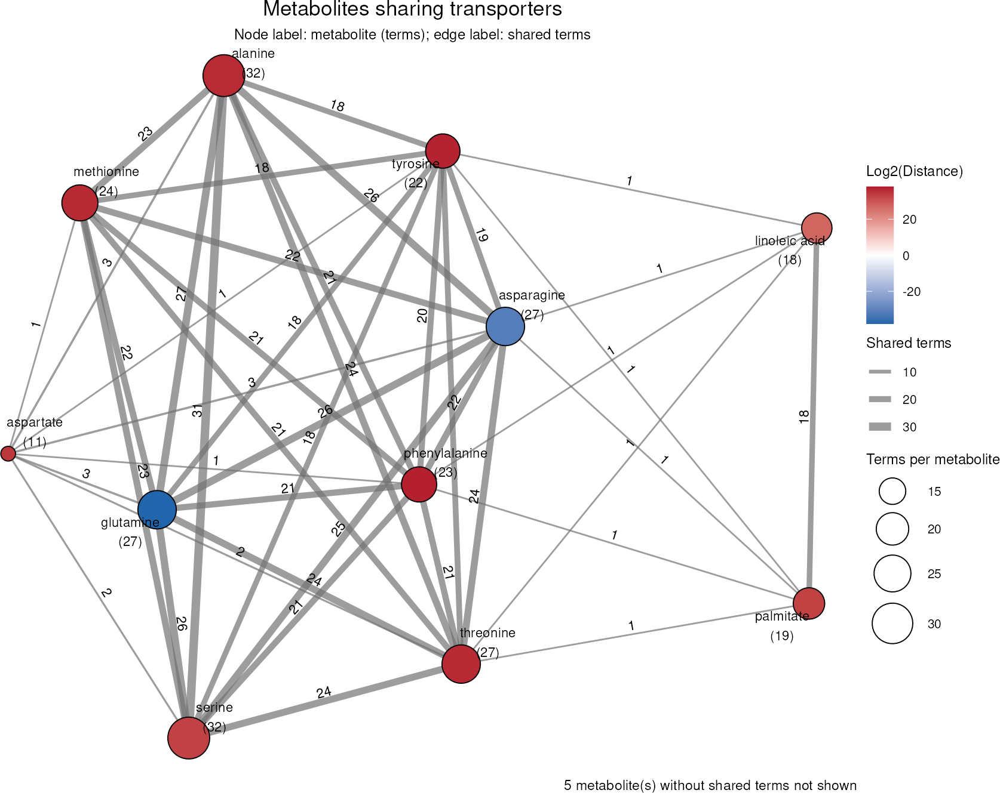
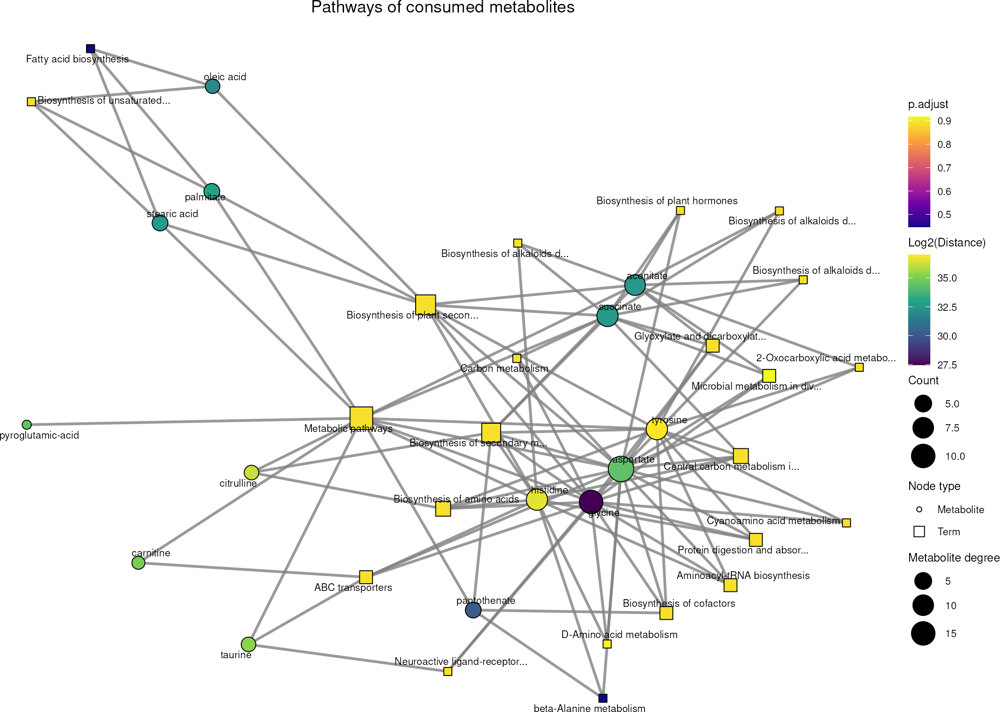
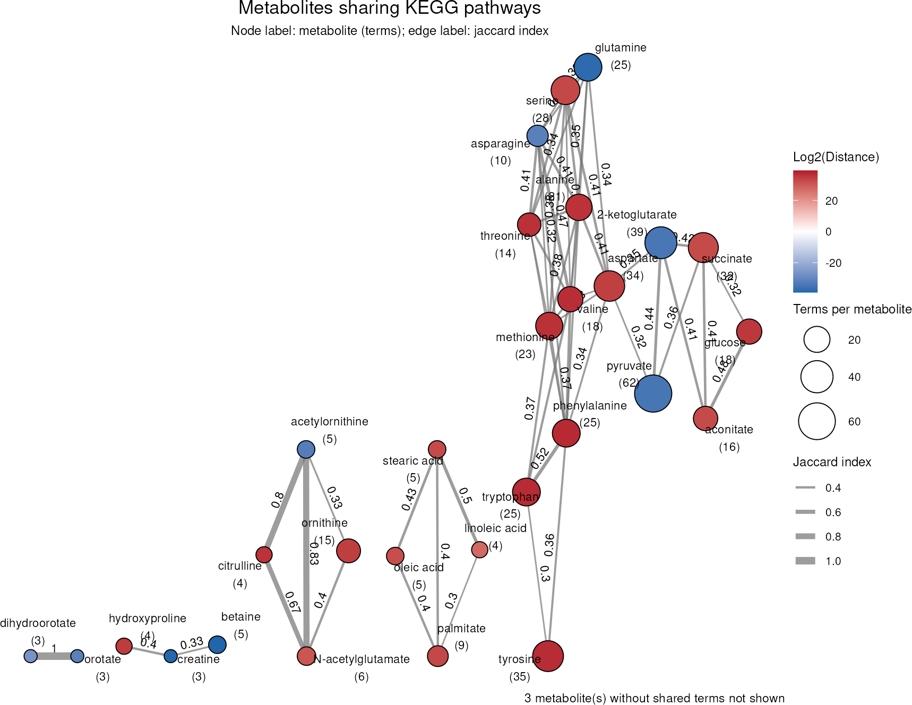
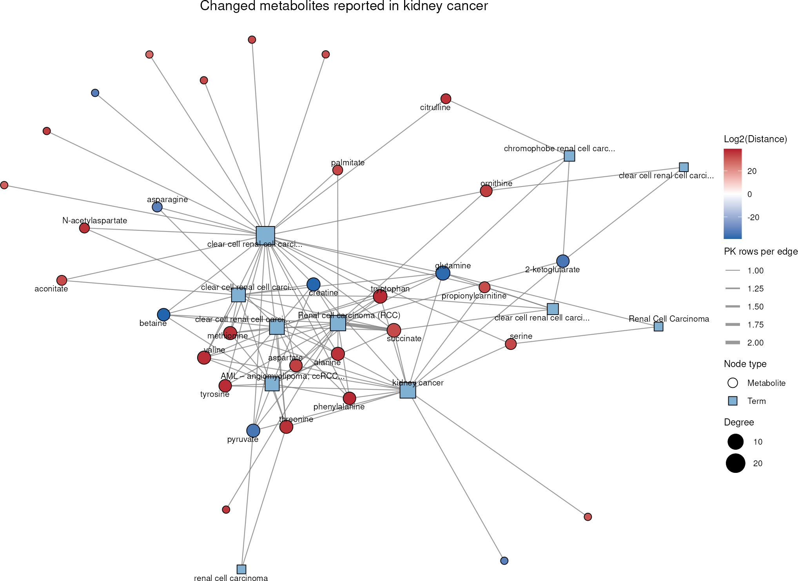
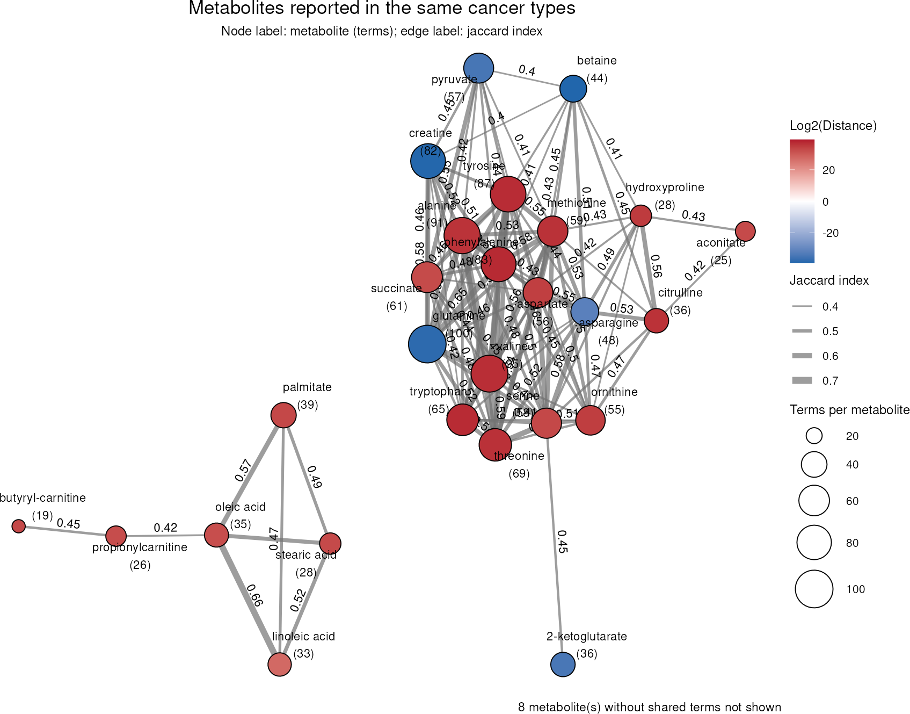

Prior Knowledge Networks
Jannik Franken
Heidelberg UniversitySource:
vignettes/pkgdown/pk-networks.Rmd
pk-networks.RmdDifferential metabolite analysis, metabolite clustering and
enrichment analysis result in lists of metabolites and pathways. Prior
knowledge (PK) networks help to interpret such lists by showing how the
metabolites are connected, e.g. to proteins, pathways or diseases.
In this tutorial we showcase how
to use MetaProViz:
- to plot measured metabolites together with the PK terms they are
linked to using
viz_pk_network().
- to connect metabolites that share PK terms using
viz_shared_pk_network().
- to use different PK resources from MetSigDB, here MetalinksDB, KEGG
and MACdb, and to map node and edge attributes to the plots.
The networks can be made for any set of metabolites, e.g. the results
of dma() on any kind of metabolomics data, a metabolite
cluster from mca_2cond() or mca_core(), or
simply a list of metabolites of interest. Here we use the results of the
consumption-release (CoRe) example data, which are explained in detail
in the CoRe
Metabolomics vignette.
First if you have not done yet, install the required dependencies and
load the libraries:
# 1. Install MetaProViz from Bioconductor devel:
# if (!requireNamespace("BiocManager", quietly = TRUE)) install.packages("BiocManager")
# BiocManager::install(version = "devel")
# BiocManager::install("MetaProViz")
# 2. Install the latest development version from GitHub using devtools
# remotes::install_github("saezlab/MetaProViz") # Install Rtools if you haven’t done this yet, using the appropriate version (e.g.windows or macOS).
library(MetaProViz)
# dependencies that need to be loaded:
library(magrittr)
library(dplyr)
library(tibble)Preparing the example results
We reproduce the results of the CoRe
Metabolomics vignette that are needed for the networks, using the
same parameters, but without plots and saved files. Please see that
vignette for an explanation of each step.1. We load the CoRe example data, the mapping of the
metabolites to KEGG and HMDB IDs and the KEGG pathways:
data(medium_raw)
Media <- medium_raw %>%
column_to_rownames("Code")
data(cellular_meta)
MappingInfo <- cellular_meta %>%
column_to_rownames("Metabolite")
KEGG_Pathways <- metsigdb_kegg()2. We pre-process the data, remove the outliers and
compare all cell lines to HK2 cells with dma():
Media_input <- Media %>%
subset(!Conditions == "Pool", select = -c(1:3))
Media_Metadata <- Media %>%
subset(!Conditions == "Pool", select = c(1:3))
PreProcessing_res <- processing(
data = Media_input,
metadata_sample = Media_Metadata,
metadata_info = c(
Conditions = "Conditions",
Biological_Replicates = "Biological_Replicates",
core_norm_factor = "GrowthFactor",
core_media = "blank"
),
featurefilt = "Modified",
cutoff_featurefilt = 0.8,
tic = TRUE,
mvi = TRUE,
mvi_percentage = 50,
hotellins_confidence = 0.99,
core = TRUE,
save_plot = NULL,
save_table = NULL,
print_plot = FALSE
)
Media_Preprocessed <- PreProcessing_res[["DF"]][["Preprocessing_output"]] %>%
subset(!Outliers == "Outlier_filtering_round_1")
DMA_Annova <- dma(
data = Media_Preprocessed[, -c(1:6)],
metadata_sample = Media_Preprocessed[, c(1:4)],
metadata_info = c(Conditions = "Conditions", Numerator = NULL, Denominator = "HK2"),
pval = "aov",
padj = "fdr",
metadata_feature = MappingInfo,
core = TRUE,
save_plot = NULL,
save_table = NULL,
print_plot = FALSE
)
DMA_HK2_vs_786M1A <- DMA_Annova[["dma"]][["HK2_vs_786-M1A"]]3. We perform ORA on the metabolites that are consumed
by both, 786-M1A and HK2 cells:
ORA_input <- DMA_HK2_vs_786M1A[complete.cases(DMA_HK2_vs_786M1A), -1] %>%
remove_rownames() %>%
column_to_rownames("KEGGCompound")
DM_ORA_HK2_vs_786M1A <- cluster_ora(
data = ORA_input,
metadata_info = c(ClusterColumn = "core_specific", PathwayTerm = "term", PathwayFeature = "Metabolite"),
remove_background = FALSE,
input_pathway = KEGG_Pathways,
pathway_name = "KEGG",
min_gssize = 3,
max_gssize = 1000,
save_table = NULL
)
MC_ORA_HK2_vs_786M1A_Consumed <- DM_ORA_HK2_vs_786M1A[["DF"]][["Consumed"]]4. We load the metabolite-protein interactions of
MetalinksDB (Farr et al. 2024), select the
metabolites that are present in kidney, blood or urine and known to be
extracellular, and remove duplicated metabolite-protein pairs
originating from different PK resources:
MetaLinksDB <- metsigdb_metalinks(
cell_location = c("Extracellular"),
tissue_location = c("Kidney", "All Tissues"),
biospecimen_location = c("Blood", "Urine"),
save_table = NULL
)
MetaLinksDB_Select <- MetaLinksDB %>%
tidyr::unite("UniquePair", c("hmdb", "gene_symbol"), sep = "_", remove = FALSE) %>%
distinct(UniquePair, .keep_all = TRUE)Going deeper with prior knowledge networks
In the CoRe
Metabolomics vignette we have found metabolites that change between
786-M1A and HK2 cells (dma()), grouped them by their
consumption and release behaviour (mca_core()) and tested
them for enriched pathways (cluster_ora()). The results are
lists of metabolites and pathways. To understand them, it helps to look
at how these metabolites are connected through prior knowledge (PK):
Which proteins can transport them? Which metabolites drive an enriched
pathway? Have they been reported in kidney cancer before?MetaProViz offers two network plots for this, which work
with any PK table in long format, such as the MetSigDB resources loaded
by the metsigdb_*() functions:
-
viz_pk_network()plots the measured metabolites together with the PK terms they are linked to (e.g. proteins, pathways or cancer types). It shows which terms connect the metabolites. -
viz_shared_pk_network()only plots the metabolites and connects two metabolites if they are linked to the same terms. It shows how similar the metabolites are in the PK, and the edge weight can be the number of shared terms (similarity = "shared") or the Jaccard index ("jaccard") (Jaccard 1901). Metabolites without any shared term are not plotted, but listed in the results.
Both functions use the same metadata_info:
InputID and PriorID name the ID columns used
to match the metabolites in our data to the PK, PriorTerm
the PK column that holds the terms and InputLabel the
metabolite names. Further entries map columns to the node colours and
sizes and the edge colours, line types, widths and directions (see
?viz_pk_network). Hence, the same
metadata_info can be passed to both functions.
Here we use the metabolites that change significantly between 786-M1A
and HK2 cells and colour them by their Log2(Distance). A
positive Log2(Distance) means that the metabolite has a
higher CoRe value in HK2 than in 786-M1A cells, i.e. 786-M1A cells
consume more or release less of it, and a negative value means the
opposite:
Transporters of the changed metabolites (MetalinksDB)
As we look at metabolites consumed from or released into the medium,
transporters are the obvious proteins to start with. We select the
transporter-metabolite interactions of MetalinksDB (Farr et al. 2024) from the
MetaLinksDB_Select table we created above.
metsigdb_metalinks() provides the columns
interaction (e.g. “Transport_In” or “Transport_Out”) and
direction, which we use to colour and orient the edges.
MetaLinks_Transporters <- MetaLinksDB_Select %>%
filter(interaction_family == "Transporter-metabolite")
MetaLinks_Info <- c(
InputID = "HMDB",
InputLabel = "Metabolite",
PriorID = "hmdb",
PriorTerm = "gene_symbol",
MetaboliteColor = "Log2(Distance)",
EdgeColor = "interaction",
EdgeDirection = "direction"
)
Transporter_Network <- viz_pk_network(
feature_metadata = DMA_Significant,
input_pk = MetaLinks_Transporters,
metadata_info = MetaLinks_Info,
plot_name = "Transporters of changed metabolites",
seed = 123,
save_plot = NULL
)
The amino acids alanine, serine, asparagine, glutamine, threonine,
methionine, phenylalanine and tyrosine form one dense cluster, as they
are transported by the same solute carriers, such as SLC1A5 (ASCT2),
SLC7A5 (LAT1) and SLC38A2 (SNAT2). The fatty acids palmitate and
linoleic acid are linked to fatty acid transporters and binding proteins
of the SLC27A and FABP families, and pyruvate to monocarboxylate
transporters such as SLC16A1. Note that these links are prior knowledge
and were not measured here: that the changed consumption and release of
these metabolites is due to these transporters is a hypothesis, which
needs to be supported by literature or experiments. Metabolites without
an HMDB ID or without a transporter in MetalinksDB are listed in
Transporter_Network[["DF"]][["unmatched_features"]].
With viz_shared_pk_network() we can summarise this
network on the metabolite level: two metabolites are connected if they
share transporters, and the edge label shows how many. The number
beneath each metabolite is its total number of transporters.
Transporter_Shared <- viz_shared_pk_network(
feature_metadata = DMA_Significant,
input_pk = MetaLinks_Transporters,
metadata_info = MetaLinks_Info,
similarity = "shared",
plot_name = "Metabolites sharing transporters",
seed = 123,
save_plot = NULL
)
Alanine and serine share 31 transporters and asparagine and glutamine 26 of their 27 transporters, so these amino acids are hardly distinguishable by their transporters. Palmitate and linoleic acid share 18 transporters with each other, but only single ones with the amino acids. Pyruvate, succinate and hypoxanthine have transporters, but none in common with the other changed metabolites, and are therefore not shown. Changes in the consumption or release of the amino acid cluster may hence point to a change in the activity of the same transporters.
Metabolites behind the pathway enrichment (KEGG)
In the ORA of the metabolites consumed by both cell lines above, many
KEGG pathways (Kanehisa and Goto 2000)
have a similar, non-significant p-value. viz_pk_network()
shows which metabolites these pathways are based on. We only plot the
pathways with at least three metabolites in the cluster and use the ORA
results as term_metadata to colour the pathways by their
adjusted p-value and size them by the number of cluster metabolites. For
this, the pathway column of the ORA results needs to have the same name
as PriorTerm.
ORA_Consumed <- MC_ORA_HK2_vs_786M1A_Consumed %>%
dplyr::rename("term" = "ID") %>%
filter(Count >= 3)
DMA_Consumed <- DMA_HK2_vs_786M1A %>%
filter(core_specific == "Consumed")
KEGG_Info <- c(
InputID = "KEGG.ID",
InputLabel = "Metabolite",
PriorID = "MetaboliteID",
PriorTerm = "term",
MetaboliteColor = "Log2(Distance)",
TermColor = "p.adjust",
TermSize = "Count"
)
KEGG_Network <- viz_pk_network(
feature_metadata = DMA_Consumed,
input_pk = KEGG_Pathways %>% filter(term %in% ORA_Consumed$term),
metadata_info = KEGG_Info,
term_metadata = ORA_Consumed,
id_type = "KEGG",
label_mode = "all",
label_max_chars = 30,
plot_name = "Pathways of consumed metabolites",
seed = 123,
save_plot = NULL
)
Aspartate is linked to 19 and glycine to 15 of the 23 pathways, so most pathways in the ORA results are based on the same few metabolites and do not carry independent information. The two pathways with the lowest adjusted p-value stand out: Fatty acid biosynthesis is based on palmitate, stearic acid and oleic acid, and beta-Alanine metabolism on aspartate, histidine and pantothenate.
Next, we use all KEGG pathways to see which of the significantly
changed metabolites take part in the same pathways. As some metabolites,
like amino acids, are part of many pathways, the raw number of shared
pathways would mainly connect these hubs. The Jaccard index instead
divides the shared pathways by all pathways of both metabolites, and
with threshold = 0.3 we only keep metabolite pairs that
share at least 30% of their pathways.
KEGG_Shared <- viz_shared_pk_network(
feature_metadata = DMA_Significant,
input_pk = KEGG_Pathways,
metadata_info = KEGG_Info,
similarity = "jaccard",
threshold = 0.3,
id_type = "KEGG",
plot_name = "Metabolites sharing KEGG pathways",
seed = 123,
save_plot = NULL
)
The metabolites split into modules that correspond to known parts of metabolism: the fatty acids (palmitate, stearic acid, oleic acid and linoleic acid), the urea cycle (ornithine, citrulline, N-acetylglutamate and acetylornithine), pyrimidine synthesis (orotate and dihydroorotate) and a large module of amino acids that is connected to the TCA cycle intermediates, pyruvate and glucose.
Note that this connects metabolites by the pathways they
share. To connect pathways by the metabolites they share, use
cluster_pk() (see the Prior
Knowledge vignette), which also accepts ORA results and then only
uses the metabolites in the cluster.
Previous reports in kidney cancer (MACdb)
MACdb (Sun et al. 2023) collects
metabolite-cancer associations reported in published studies and
identifies metabolites by PubChem IDs. Our data has HMDB and KEGG IDs,
so we first translate the KEGG IDs into PubChem IDs with
translate_id(). One KEGG ID can map to several PubChem IDs,
which are then separated by “,” in the pubchem column;
id_sep = "," makes the network functions use all of
them.
DMA_Significant_PubChem <- translate_id(
data = DMA_Significant %>% filter(!is.na(KEGG.ID)),
metadata_info = c(InputID = "KEGG.ID", grouping_variable = "Metabolite"),
from = "kegg",
to = "pubchem",
save_table = NULL
)[["TranslatedDF"]]
MACdb <- metsigdb_macdb()
#> Warning: There were 3 warnings in `mutate()`.
#> The first warning was:
#> ℹ In argument: `case_control_p-value = as.numeric(`case_control_p-value`)`.
#> Caused by warning:
#> ! NAs introduced by coercion
#> ℹ Run `dplyr::last_dplyr_warnings()` to see the 2 remaining warnings.As our cells are a model of clear cell renal cell carcinoma, we plot the associations with kidney cancers:
MACdb_Kidney <- MACdb %>%
filter(grepl("renal|kidney|RCC", term, ignore.case = TRUE))
MACdb_Info <- c(
InputID = "pubchem",
InputLabel = "Metabolite",
PriorID = "Metabolite_PubchemID",
PriorTerm = "term",
MetaboliteColor = "Log2(Distance)"
)
MACdb_Network <- viz_pk_network(
feature_metadata = DMA_Significant_PubChem,
input_pk = MACdb_Kidney,
metadata_info = MACdb_Info,
id_type = "PubChem",
id_sep = ",",
label_max_chars = 30,
plot_name = "Changed metabolites reported in kidney cancer",
seed = 123,
save_plot = NULL
)
Almost all of the 35 changed metabolites with a PubChem ID (32) have been associated with kidney cancers before, most often glutamine (8 of the 11 kidney cancer terms), succinate and tryptophan (7 each). Note that the MACdb terms are the cancer types as named in each study, so similar cancer types appear several times.
Across all cancer types in MACdb, metabolites that are often reported together may form a panel of markers. We again use the Jaccard index and keep the metabolite pairs that share at least 40% of their cancer types:
MACdb_Shared <- viz_shared_pk_network(
feature_metadata = DMA_Significant_PubChem,
input_pk = MACdb,
metadata_info = MACdb_Info,
similarity = "jaccard",
threshold = 0.4,
id_type = "PubChem",
id_sep = ",",
plot_name = "Metabolites reported in the same cancer types",
seed = 123,
save_plot = NULL
)
The fatty acids together with the acylcarnitines butyryl-carnitine and propionylcarnitine form a group that is separate from the amino acids and central carbon metabolites. The most similar pairs are phenylalanine and tyrosine (Jaccard index 0.73) and alanine and valine (0.71). As amino acids are measured in many studies, they share many cancer types, which illustrates how the coverage of the prior knowledge shapes these networks.
Keep in mind that prior knowledge is biased towards well-studied
metabolites and proteins: a metabolite without links is not necessarily
unconnected, and metabolites with many links appear more central. The
networks therefore point to connections worth following up, but do not
show that they are active in our cells. All tables behind the plots,
including the metabolites that could not be matched, are returned in the
DF element of the results.
Session information
#> R version 4.6.1 (2026-06-24)
#> Platform: x86_64-pc-linux-gnu
#> Running under: Ubuntu 24.04.4 LTS
#>
#> Matrix products: default
#> BLAS: /usr/lib/x86_64-linux-gnu/openblas-pthread/libblas.so.3
#> LAPACK: /usr/lib/x86_64-linux-gnu/openblas-pthread/libopenblasp-r0.3.26.so; LAPACK version 3.12.0
#>
#> locale:
#> [1] LC_CTYPE=en_US.UTF-8 LC_NUMERIC=C LC_TIME=en_US.UTF-8 LC_COLLATE=en_US.UTF-8
#> [5] LC_MONETARY=en_US.UTF-8 LC_MESSAGES=en_US.UTF-8 LC_PAPER=en_US.UTF-8 LC_NAME=C
#> [9] LC_ADDRESS=C LC_TELEPHONE=C LC_MEASUREMENT=en_US.UTF-8 LC_IDENTIFICATION=C
#>
#> time zone: Etc/UTC
#> tzcode source: system (glibc)
#>
#> attached base packages:
#> [1] stats graphics grDevices utils datasets methods base
#>
#> other attached packages:
#> [1] tibble_3.3.1 dplyr_1.2.1 magrittr_2.0.5 MetaProViz_4.99.0 BiocStyle_2.40.0
#>
#> loaded via a namespace (and not attached):
#> [1] RColorBrewer_1.1-3 jsonlite_2.0.0 magick_2.9.1 ggbeeswarm_0.7.3
#> [5] farver_2.1.2 rmarkdown_2.32 fs_2.1.0 ragg_1.5.2
#> [9] vctrs_0.7.3 memoise_2.0.1 tinytex_0.61 rstatix_1.1.0
#> [13] htmltools_0.5.9 S4Arrays_1.12.1 progress_1.2.3 curl_8.0.0
#> [17] ComplexUpset_1.3.3 decoupleR_2.17.0 broom_1.0.13 cellranger_1.1.0
#> [21] SparseArray_1.12.3 Formula_1.2-6 sass_0.4.10 parallelly_1.48.0
#> [25] bslib_0.12.0 htmlwidgets_1.6.4 desc_1.4.3 plyr_1.8.9
#> [29] httr2_1.3.0 lubridate_1.9.5 cachem_1.1.0 igraph_2.3.4
#> [33] lifecycle_1.0.5 pkgconfig_2.0.3 Matrix_1.7-6 R6_2.6.1
#> [37] fastmap_1.2.0 MatrixGenerics_1.24.0 digest_0.6.39 ggnewscale_0.5.2
#> [41] colorspace_2.1-3 patchwork_1.3.2 S4Vectors_0.50.3 textshaping_1.0.5
#> [45] GenomicRanges_1.64.0 RSQLite_3.53.3 ggpubr_1.0.0 labeling_0.4.3
#> [49] timechange_0.4.0 polyclip_1.10-7 httr_1.4.9 abind_1.4-8
#> [53] compiler_4.6.1 bit64_4.8.6 withr_3.0.3 S7_0.2.2
#> [57] backports_1.5.1 BiocParallel_1.46.0 viridis_0.6.5 carData_3.0-6
#> [61] DBI_1.3.0 logger_0.4.3 OmnipathR_4.1.0 ggforce_0.5.0
#> [65] R.utils_2.13.0 ggsignif_0.6.4 cosmosR_1.20.0 MASS_7.3-66
#> [69] rappdirs_0.3.4 DelayedArray_0.38.2 sessioninfo_1.2.4 scatterplot3d_0.3-45
#> [73] gtools_3.9.5 tools_4.6.1 vipor_0.4.7 otel_0.2.0
#> [77] beeswarm_0.4.0 zip_3.0.2 R.oo_1.27.1 glue_1.8.1
#> [81] grid_4.6.1 checkmate_2.3.4 reshape2_1.4.5 generics_0.1.4
#> [85] gtable_0.3.6 tzdb_0.5.0 R.methodsS3_1.8.2 tidyr_1.3.2
#> [89] hms_1.1.4 tidygraph_1.3.1 xml2_1.6.0 car_3.1-5
#> [93] XVector_0.52.0 BiocGenerics_0.58.1 ggrepel_0.9.8 pillar_1.11.1
#> [97] stringr_1.6.0 limma_3.68.5 later_1.4.8 splines_4.6.1
#> [101] tweenr_2.0.3 lattice_0.22-9 bit_4.6.0 tidyselect_1.2.1
#> [105] knitr_1.52 gridExtra_2.3.1 bookdown_0.48 IRanges_2.46.0
#> [109] Seqinfo_1.2.0 SummarizedExperiment_1.42.0 stats4_4.6.1 xfun_0.61
#> [113] graphlayouts_1.2.5 Biobase_2.72.0 statmod_1.5.2 factoextra_2.2.0
#> [117] matrixStats_1.5.0 pheatmap_1.0.13 stringi_1.8.9 yaml_2.3.12
#> [121] evaluate_1.0.5 codetools_0.2-20 tcltk_4.6.1 ggraph_2.2.2
#> [125] qvalue_2.44.0 hash_2.2.6.4 BiocManager_1.30.27 Polychrome_1.6.2
#> [129] cli_3.6.6 systemfonts_1.3.2 jquerylib_0.1.4 EnhancedVolcano_1.31.0
#> [133] Rcpp_1.1.2 readxl_1.5.0.1 XML_3.99-0.25 parallel_4.6.1
#> [137] ggfortify_0.4.24 pkgdown_2.2.1 ggplot2_4.0.3 readr_2.2.0
#> [141] blob_1.3.0 prettyunits_1.2.0 viridisLite_0.4.3 scales_1.4.0
#> [145] writexl_2.0.1 inflection_1.3.7 purrr_1.2.2 crayon_1.5.3
#> [149] rlang_1.3.0 rvest_1.0.5